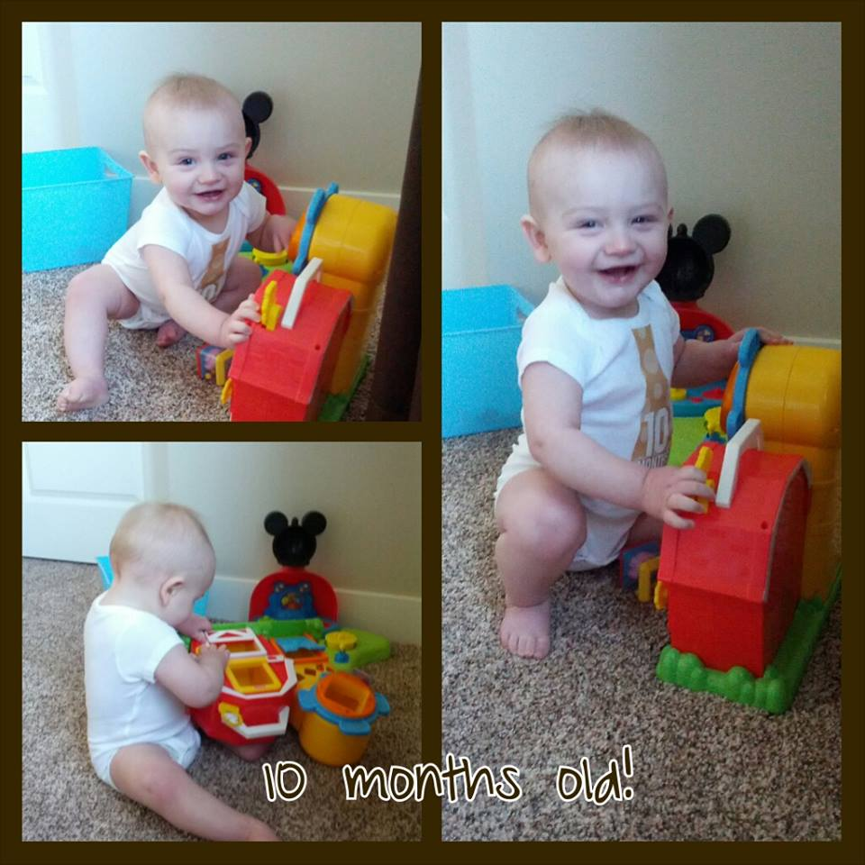

Professor Michael Wright / mk_wright
I'm a Professional Software Engineer who works for Family Search
I am father of 5 (4 cute girls and 1 awesome little guy). I love to play piano, guitar and violin and just about any instrument I can get my hands on (even though I don't sound good). I love to play with electronics and the occasional video game.
I have worked for a number of different companies in a number of different technologies that range from simple e-commerce to storage backup and forensic data. I have a professional background with many years experience
I have been an adjunct professor for UVU since 2007. During which I have been able to teach a number of different courses:
I am available most of the day for simple chat, but will likely not be able to communicate over the phone without prior arrangements. I am also accessible through a couple of different means.
In this course we are going to stray from what you would normally experience in other computer science courses. this one is completely focused on mathematics and its application in computers.
Since we are going to be focused on mathematics your assigments will be mostly handwritten and handed in during class. There is a possibility that a programming assigment might be slipped in before the end of the semester though.
This class will teach you a lot of the fundamentals of logic design and its use within the computing industry.
To get the most out of this course you should not only follow along with the area we are covering in the book, but also to go through the examples we will discuss in the course and also doing the in-class assignments.
The textbook for this course is listed below. Be sure to pickup a copy as there are a number of other examples and problems that you will need to go over.
This class, like I hope all other college classes, is built around the idea of group discussions and cooperative support. I believe that ideas and questions can and should be shared with each other.
This does not mean that you can answer the questions for each other, or copy each other's work. Please work on your own personal material for cheating will have 0 tolerance
This class is a single block class, which means that it will go fromMay 12th, 2014 to June 26th, 2014.
This class is broken down into 4 days a week
To help compensate with the time and informtion we are going to be covering slightly less material than you would normally cover in this class. Also to allow for my work and "office hours" we will not be meeting on Monday, and instead will be setup to handle online communication (or hangouts)